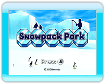

7 |
Pour commencer |
 |
|
● Commencer une nouvelle partie À l'écran titre, appuyez sur 1. Sélectionner un fichier 
Lorsque vous jouez pour la première fois, sélectionnez un fichier marqué Empty (vide) afin de créer un nouveau fichier de sauvegarde. Note : Si vous sélectionnez un fichier qui contient déjà des données de sauvegarde, celles-ci seront écrasées par les données de la nouvelle partie. Les données effacées ne peuvent pas être récupérées. 2. Sélectionner le personnage principal Choisissez parmi les personnages Mii présents sur votre console Wii, ou parmi les personnages créés pour le jeu. Une fois que vous aurez choisi un personnage, les données de sauvegarde seront créées et la partie commencera. Notes : - Vous ne pouvez pas changer de personnage principal en cours de partie. ● Reprendre une partie À l'écran titre, appuyez sur ・Sélectionner un fichier de sauvegarde Pour reprendre une partie sauvegardée, sélectionnez le fichier de sauvegarde correspondant. Notes : - Pour plus de détails à propos de la sauvegarde, veuillez consulter la page 8 (Quitter la partie). |
 |
 |
 |